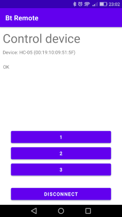

risorse | controllo di arduino da android via bluetooth
Un amico ha sviluppato un dispositivo elettronico basato su Arduino come ausilio per una particolare lavorazione in un'officina meccanica. Per comodità vorrebbe poterlo comandare da remoto via Bluetooth da un terminale Android. Mi ha gentilmente donato un modulo Bluetooth HC-05 per poter fare le prove del caso.
Esistono diverse guide in rete che spiegano come impiegare questo componente con Arduino, ma non ne ho trovata nessuna comprensiva. Per questa ragione ho raccolto in questa pagina alcuni appunti in merito:
Prima di collegare il modulo HC-05 ad Arduino bisogna tener presente che la tensione di lavoro delle linee TX e RX del primo è di 3.3V, mentre il secondo adotta lo standard 5V (livello, questo, adeguato per l'alimentazione del modulo HC-05 grazie al regolatore di tensione di cui è dotato).
Secondo quanto riportato nella documentazione ufficiale il microcontrollore di Arduino — ATmega328 — riconosce come livello alto qualunque tensione al di sopra dei 3V, per esempio in Defining Pin Levels: HIGH and LOW si legge:
… the Arduino (ATmega) will report HIGH if a voltage greater than 3.0V is present at the pin (5V boards)…
Per questa ragione la linea TX del modulo HC-05 può essere direttamente connessa ad un ingresso digitale di Arduino, per esempio la porta D3. Per quanto riguarda invece la linea RX, la documentazione parla chiaro (cfr. pag.2 in EGBT-045MS-046S Bluetooth Module Manual rev 1r0.pdf — copia locale):
EGBT RXD and inputs, however, are not 5V tolerant, and can be damaged by 5V level logic going in.
Lo stesso datasheet appena citato consiglia di interporre tra Arduino e l'HC-05 un circuito d'interfaccia che utilizza un diodo Zener come protezione del modulo Bluetooth. Per queste prime prove ho optato per un approccio più semplice, predisponendo un partitore di tensione utilizzando tre resitori da 10KΩ per ridurre i 5V emessi da Arduino di due terzi, portandoli a poco più di 3.3V:
Lo schema elettrico
Il cablaggio del circuito
Realizzazione pratica del circuito
La scelta di usare le porte D2 e D3 di Arduino per stabilire il collegamento seriale con il modulo HC-05 anzicé le più usuali D0/RX e D1/TX non è casuale: così facendo la linea seriale standard di Arduino può essere sfruttata per collegare la scheda al PC. Diventa così possibile utilizzare Arduino come ponte per accedere al modulo HC-05 dall Serial Monitor dell'IDE di Arduino (o qualunque altro terminale seriale, in verità). Questo permette di configurare al meglio il modulo per l'uso che se ne farà in seguito, quando sarà Arduino ad utilizzarlo per i suoi scopi. Secondo quanto riportato in rete, la configurazione standard del modulo Bluetooth è la seguente:
Conviene comunque accertarsi dello stato interno del modulo per evitare inutili perdite di tempo in caso di malfunzionamenti. Per farlo bisogna innanzitutto porre l'HC-05 in Command Mode, modalità nella quale è possibile alterare la configurazione del modulo mediante l'invio di comandi AT. Per attivare il Command Mode è sufficiente tener premuto il piccolo pulsante che si trova nei pressi del connettore durante l'accensione (il led rosso a bordo emette un lampeggio ogni due secondi per segnalare che il modulo è Command Mode). In questa modalità il modulo comunica esclusivamente a 38400 Baud. Ho preparato uno sketch che mette in comunicazione PC e modulo HC-05:
#include <SoftwareSerial.h>
const int tx_pin = 2; // pin connected to RXD
const int rx_pin = 3; // pin connected to TXD
SoftwareSerial hc05_serial(rx_pin, tx_pin);
void setup() {
// open PC serial
Serial.begin(9600);
Serial.print("Sketch: ");
Serial.println(__FILE__);
Serial.print("Uploaded: ");
Serial.println(__DATE__);
Serial.println(" ");
// open HC-05 serial
hc05_serial.begin(38400);
Serial.println("Hc05Serial ready");
Serial.println(" ");
}
void loop() {
// forward incoming HC-05 data to PC
while (hc05_serial.available())
Serial.write(hc05_serial.read());
// forward incoming PC data to HC-05
while (Serial.available())
hc05_serial.write(Serial.read());
}
Scarica lo sketch pc-hc05-bridge.ino
Il diagramma sottostante riassume quanto realizzato finora:

Programmazione del componente HC-05
L'elenco dei comandi AT riconosciuti dal modulo HC-05 è riportato nel manuale sopra citato. Pochi comandi son bastati per confermare che lo stato interno del modulo a mia disposizione è più che soddisfacente e non necessita di interventi. Ho iniziato con un semplice comando AT per verificare l'avvenuta connessione:
AT OK
A seguire un'interrogazione circa la versione del firmware interno:
AT+VERSION? +VERSION:4.0-20190815 OK
È il momento del nome assegnato al dispositivo:
AT+NAME? +NAME:HC-05 OK
Ora il ruolo assunto dal modulo:
AT+ROLE? +ROLE:0 OK
La documentazione ufficiale riporta la corrispondenza 0=Slave, 1=Master, 2=Slave-Loop; il modulo è dunque programmato come Slave. Qual'è il PIN per il pairing?
AT+PSWD? +PSWD:1234 OK
Infine, la velocità di comunicazione della linea seriale:
AT+UART? +UART:9600,0,0 OK
Questa non è la velocità con cui il modulo sta comunicando in questo preciso momento — essendo l'HC-05 in modalità Command la linea seriale con Arduino sta funzionando a 38400 Baud — ma quella che utilizzerà durante il funzionamento normale.
Attenzione! In modalità Command il modulo si attende, come marcatore di fine linea, la sequenza di caratteri CR+LF. Se si intende usare il Serial Monitor dell'IDE di Arduino accertarsi che nella casella combinata in basso a destra sia evidenziato “Both NL & CR” mentre in quella accanto, che mostra la la velocità di comunicazione, sia indicato “9600” (essendo questa la velocità cui è stato impostato l'oggetto Serial dello sketch appena caricato su Arduino).
Noti i parametri di funzionamento del modulo HC-05 in modalità normale — detta anche Data Mode —, è giunta l'ora di inventare un semplice protocollo per mettere alla prova l'intera infrastruttura, secondo lo schema:

Comunicazione tra Arduino e terminale Android
In un eccesso di fantasia ho definito protocollo con tre semplici comandi:
Il vantaggio di vedere il canale Bluetooth come una seriale consente di sviluppare il software per Arduino emulando la parte remota con il Serial Monitor, sostituendo temporaneamente la seriale hc05_serial con l'oggetto Serial. Lo sketch finale si ottiene dal precedente con poche isolate modifiche:
#include <SoftwareSerial.h>
const int tx_pin = 2; // pin connected to RXD
const int rx_pin = 3; // pin connected to TXD
SoftwareSerial hc05_serial(rx_pin, tx_pin);
bool blink = false;
void setup() {
// open PC serial
Serial.begin(9600);
Serial.print("Sketch: ");
Serial.println(__FILE__);
Serial.print("Uploaded: ");
Serial.println(__DATE__);
Serial.println(" ");
// open HC-05 serial
hc05_serial.begin(384009600); // <----- Data Mode Baud Rate
Serial.println("Hc05Serial ready");
Serial.println(" ");
pinMode(LED_BUILTIN, OUTPUT);
}
void loop() {
// forward incoming HC-05 data to PC
while (hc05_serial.available())
Serial.write(hc05_serial.read());
// forward incoming PC data to HC-05
while (Serial.available())
hc05_serial.write(Serial.read());
if (Serial.available()) {
switch (Serial.read()) {
case '1':
blink = false;
digitalWrite(LED_BUILTIN, HIGH);
break;
case '2':
blink = false;
digitalWrite(LED_BUILTIN, LOW);
break;
case '3':
blink = true;
break;
default:
break;
}
}
if (blink) {
digitalWrite(LED_BUILTIN, HIGH);
delay(250);
digitalWrite(LED_BUILTIN, LOW);
}
delay(250);
}
Scarica lo sketch bt-remote.ino
Nel Play Store esistono moltissime App utilizzabili come telecomandi Bluetooth, alcune di esse caratterizzate da un altissimo grado di configurabilità. Avendo tuttavia già a portata di mano una classe Java che modella una connessione Bluetooth di tipo seriale, sviluppata anni or sono per un progetto poi naufragato, ho preferito imbastire una semplicissima App che permette dapprima di selezionare un dispositivo Bluetooth tra quelli già accoppiati con il terminale, quindi di aprire una connessione e inviare i tre comandi del protocollo al dispositivo prescelto per mezzo di tre pulsanti:
| → | → |  |
Il codice sorgente dell'App Bt Remote è disponibile su GitHub.
Ho catturato in un filmato una delle prove andate a buon fine:
Verifica del buon funzionamento del controllo remoto
La comunicazione tra il terminale Android e la scheda Arduino è al momento unidirezionale; nulla vieta tuttavia di estendere il protocollo rendendo la trasmissione bidirezionale. Si potrebbe ad esempio fare in modo che Arduino emetta un responso che indica l'esito dell'esecuzione dell'ultimo comando ricevuto (pattern request/response), ovvero introdurre un nuovo comando che interroga la scheda per ottenere alcune informazioni circa il suo stato interno.
Pagina modificata il 28/11/2020